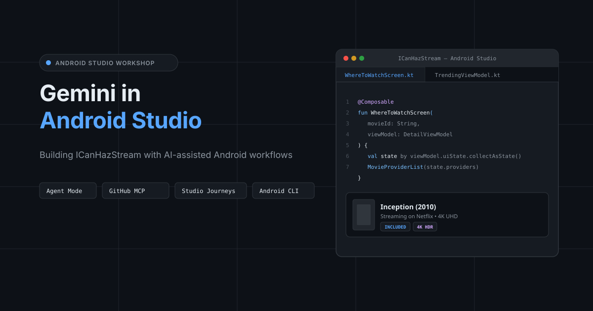
ICanHazStream (me.kartikarora.icanhazstream) is a multi-module Android app that tracks movie and TV streaming availability across platforms like Netflix, Disney+, Prime Video, Apple TV, Stan, and Binge.
In this workshop, you will use Gemini in Android Studio to modernise legacy code, generate Compose UI from wireframes, scaffold multi-module features with Agent Mode, connect external context via GitHub MCP, and automate tests with Studio Journeys and the Android CLI.
Android Studio: Latest Quail (2026.1.3+) or Rabbit Canary (2026.2.1+).
Google Account: Signed in to Android Studio for Gemini access.
JDK: JDK 21+.
Open ICanHazStream in Android Studio. Key modules include:
:app: Navigation graph (StreamNavGraph.kt).
:feature:explore: Trending movies and provider discovery.
:feature:detail: Movie details and "Where to Watch" availability.
:feature:watchlist: Saved watchlist and price drop alerts.
:core:ui: Ready-made design tokens and components (MovieCard, ProviderBadge).
:core:data: Repositories and Ktor Client 3.5.2 networking.
:core:model: @Serializable domain models (Movie, StreamingProvider).
:core:testing: In-memory test fakes (FakeMovieRepository).
The android CLI allows terminal scripts and AI agents to interact directly with Android Studio tools and daemons.
Install via terminal:
macOS (Apple Silicon):
curl -fsSL https://dl.google.com/android/cli/latest/darwin_arm64/install.sh | bash
macOS (Intel):
curl -fsSL https://dl.google.com/android/cli/latest/darwin_x86_64/install.sh | bash
Linux (x86_64):
curl -fsSL https://dl.google.com/android/cli/latest/linux_x86_64/install.sh | bash
Windows (cmd):
curl -fsSL https://dl.google.com/android/cli/latest/windows_x86_64/install.cmd -o "%TEMP%\install-android.cmd" && "%TEMP%\install-android.cmd"
Verify installation:
android --version
Install the brand skill so Gemini reuses existing :core:ui components (MovieCard, ProviderBadge) instead of generating generic composables:
npx skills install https://distribute.kartikarora.me/ai/kartikarora-compose-theme.skill
Open Settings (Cmd+, / Ctrl+Alt+S).
Go to Tools > Gemini and enable Enable context sharing.
Go to Studio Labs and enable:
Agent Mode
Transform UI with Gemini
Journeys for Android Studio
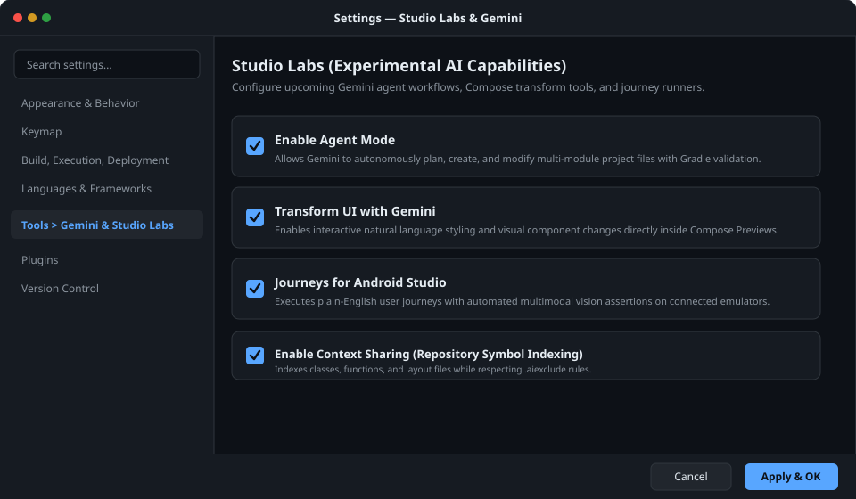
Establish engineering conventions in AGENTS.md and block sensitive files with .aiexclude.
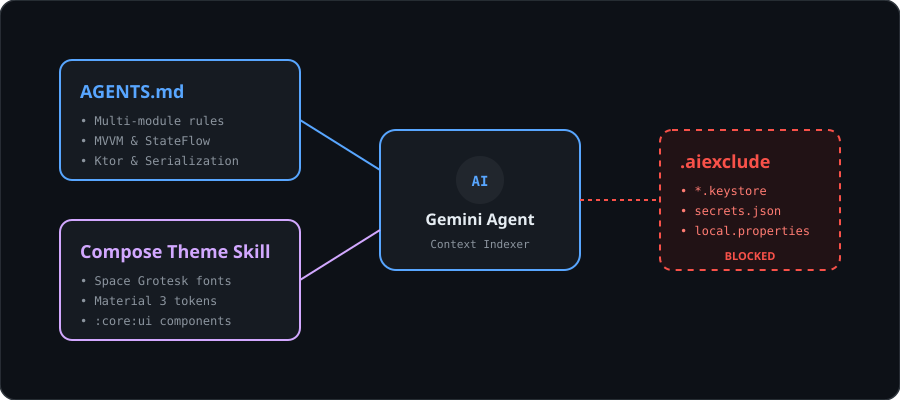
Create AGENTS.md in the project root:
AGENTS.md
# ICanHazStream: AI Engineering Guidelines
### Architecture and code conventions
- Pattern: Clean Architecture with UDF and MVVM.
- State: Expose immutable `StateFlow` from ViewModels via `asStateFlow()`. No LiveData in new code.
- Networking and serialization: Use Ktor Client 3.5.2 and kotlinx.serialization.
- Testing: Use in-memory test fakes (`FakeMovieRepository`) and Turbine for Flow tests.
- UI system: Use composables from `:core:ui` with Space Grotesk typography and Material 3 colour tokens.
Create .aiexclude in the project root to prevent API keys and credentials from being indexed or sent to cloud models:
.aiexclude
local.properties
*.jks
*.keystore
secrets/
tmdb-api-key.txt
streaming-secrets.json
Use in-editor inline prompts (Cmd+\ / Ctrl+\) to refactor code without leaving your file.
Open :feature:explore/src/main/kotlin/me/kartikarora/icanhazstream/explore/TrendingMoviesViewModel.kt:
TrendingMoviesViewModel.kt
private val _trendingMovies = MutableLiveData<List<Movie>>()
val trendingMovies: LiveData<List<Movie>> = _trendingMovies
Highlight _trendingMovies.
Press Cmd + \ (macOS) or Ctrl + \ (Windows/Linux).
Enter:
Refactor this LiveData stream to StateFlow with an initial empty list, and expose an immutable asStateFlow().
Review the inline diff and press Accept (Cmd+Enter).
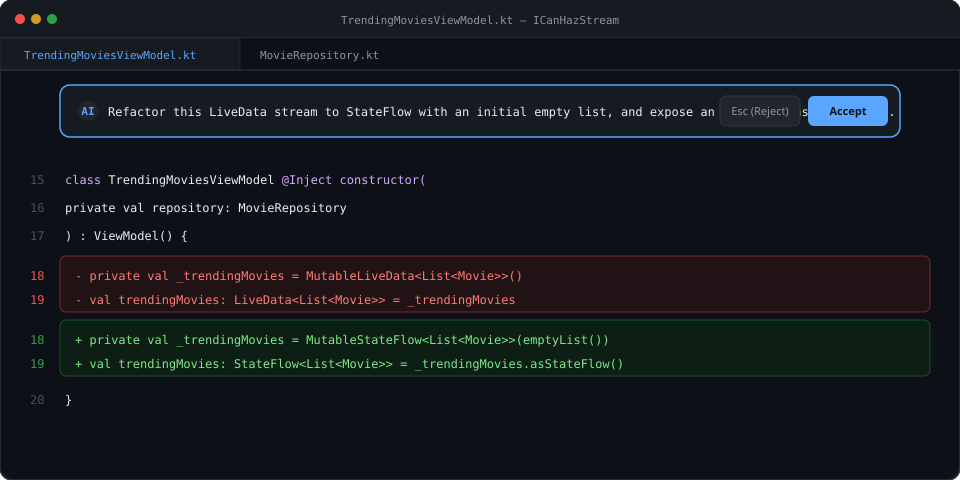
TrendingMoviesViewModel.kt
private val _trendingMovies = MutableStateFlow<List<Movie>>(emptyList())
val trendingMovies: StateFlow<List<Movie>> = _trendingMovies.asStateFlow()
Convert legacy Java utilities into idiomatic Kotlin functions.
Open :core:data/src/main/java/me/kartikarora/icanhazstream/data/legacy/WatchCostUtils.java:
WatchCostUtils.java
package me.kartikarora.icanhazstream.data.legacy;
public class WatchCostUtils {
public static double calculateOptimalWatchCost(double monthlySubscription, double rentPrice, int expectedViews) {
if (monthlySubscription <= 0.0 || rentPrice <= 0.0 || expectedViews <= 0) {
return 0.0;
}
double totalRentalCost = rentPrice * expectedViews;
return Math.min(monthlySubscription, totalRentalCost);
}
}
Select the code in WatchCostUtils.java.
Right-click and choose Gemini > Transform selected code.
Prompt:
Convert this Java utility class to an idiomatic Kotlin file with a top-level calculation function in package me.kartikarora.icanhazstream.data.
Save the output to :core:data/src/main/kotlin/me/kartikarora/icanhazstream/data/WatchCostMath.kt and delete the old .java file.
WatchCostMath.kt
package me.kartikarora.icanhazstream.data
fun calculateOptimalWatchCost(
monthlySubscription: Double,
rentPrice: Double,
expectedViews: Int
): Double {
if (monthlySubscription <= 0.0 || rentPrice <= 0.0 || expectedViews <= 0) return 0.0
val totalRentalCost = rentPrice * expectedViews
return totalRentalCost.coerceAtMost(monthlySubscription)
}
Migrate an XML layout and ViewHolder to a declarative @Composable using brand design tokens.
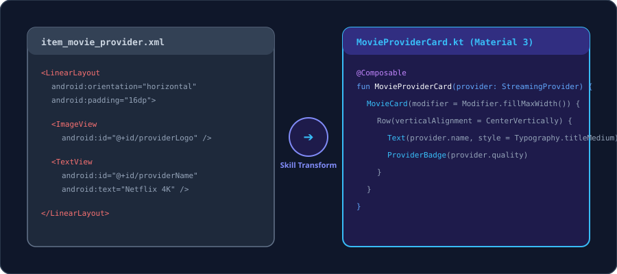
Open :feature:explore/src/main/res/layout/item_movie_provider.xml and :feature:explore/src/main/kotlin/me/kartikarora/icanhazstream/explore/MovieProviderCard.kt:
MovieProviderCard.kt
package me.kartikarora.icanhazstream.explore
import androidx.compose.runtime.Composable
import androidx.compose.ui.Modifier
import me.kartikarora.icanhazstream.model.StreamingProvider
@Composable
fun MovieProviderCard(
provider: StreamingProvider,
onClick: () -> Unit,
modifier: Modifier = Modifier
) {
}
Open Gemini Chat (View > Tool Windows > Agent) and enter:
@item_movie_provider.xml Convert this XML layout and its ViewHolder into a declarative Jetpack Compose composable for MovieProviderCard.kt. Use the @kartikarora design tokens, MovieCard, and ProviderBadge components from :core:ui.
MovieProviderCard.kt
package me.kartikarora.icanhazstream.explore
import androidx.compose.foundation.layout.*
import androidx.compose.material3.*
import androidx.compose.runtime.Composable
import androidx.compose.ui.Alignment
import androidx.compose.ui.Modifier
import androidx.compose.ui.unit.dp
import me.kartikarora.icanhazstream.model.StreamingProvider
import me.kartikarora.icanhazstream.ui.components.MovieCard
import me.kartikarora.icanhazstream.ui.components.ProviderBadge
@Composable
fun MovieProviderCard(
provider: StreamingProvider,
onClick: () -> Unit,
modifier: Modifier = Modifier
) {
MovieCard(
onClick = onClick,
modifier = modifier
.fillMaxWidth()
.padding(horizontal = 16.dp, vertical = 8.dp)
) {
Row(
modifier = Modifier
.fillMaxWidth()
.padding(16.dp),
verticalAlignment = Alignment.CenterVertically,
horizontalArrangement = Arrangement.SpaceBetween
) {
Column(modifier = Modifier.weight(1f)) {
Text(
text = provider.name,
style = MaterialTheme.typography.titleMedium,
color = MaterialTheme.colorScheme.onSurface
)
Spacer(modifier = Modifier.height(4.dp))
Text(
text = "Quality: ${provider.quality} • Plan: ${provider.planType}",
style = MaterialTheme.typography.bodySmall,
color = MaterialTheme.colorScheme.onSurfaceVariant
)
}
ProviderBadge(text = provider.quality)
}
}
}
Speed up daily tasks with built-in documentation, code explanation, and commit helpers.
Open :core:model/src/main/kotlin/me/kartikarora/icanhazstream/model/Movie.kt. Right-click the class and select Gemini > Document Class:
Movie.kt
package me.kartikarora.icanhazstream.model
import kotlinx.serialization.Serializable
/**
* Represents a film or TV title available across streaming services.
*
* @property id Unique TMDB or Watchmode identifier.
* @property title The official release title.
* @property overview Synopsis and storyline summary.
* @property releaseYear The release year.
* @property rating Average user rating score out of 10.
* @property posterUrl Absolute URL for the title cover artwork.
*/
@Serializable
data class Movie(
val id: String,
val title: String,
val overview: String,
val releaseYear: Int,
val rating: Double,
val posterUrl: String
)
Highlight any complex regex (e.g. ^tt\d{7,8}$ or ^https://(www\.)?(netflix|disneyplus|apple)\.com/.+$), right-click, and select Gemini > Explain Code for a breakdown of capture groups and patterns.
Stage modified files in the Commit tool window (Cmd+K / Ctrl+K) and click Suggest Commit Message:
feat(explore): convert movie provider item layout to Compose and add KDoc
Attach UI wireframe sketches directly into Gemini Chat to generate Compose layouts.
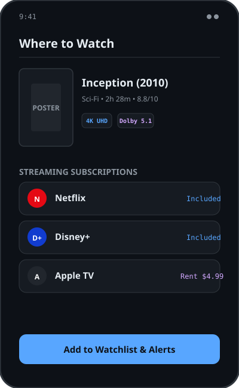
Use assets/wireframe-where-to-watch.png (or the diagram above) and open :feature:detail/src/main/kotlin/me/kartikarora/icanhazstream/detail/WhereToWatchScreen.kt.
Attach assets/wireframe-where-to-watch.png in Gemini Chat with this prompt:
Generate the Jetpack Compose screen for WhereToWatchScreen.kt matching this wireframe mockup.
Include:
1. Movie poster header with title, release year, runtime, and 4K UHD badge.
2. Streaming subscription provider cards (Netflix, Disney+).
3. Rent and buy options (Apple TV, Google Play).
4. "Add to Watchlist & Alerts" button at the bottom.
Use Material 3 components and design tokens from :core:ui.
Paste the generated composable into WhereToWatchScreen.kt.
Iterate on visual styling directly inside the Compose Preview panel using natural language.
At the bottom of WhereToWatchScreen.kt, right-click and choose Gemini > Generate Compose Preview:
@PreviewLightDark
@Composable
private fun WhereToWatchScreenPreview() {
ICanHazStreamTheme {
WhereToWatchScreen(
movieId = "inception-2010",
onNavigateBack = {}
)
}
}
Build the project (Cmd+F9 / Ctrl+F9) to render the preview.
Click Transform UI with Gemini in the preview toolbar.
Prompt:
Set provider card corner radius to 16dp, add 4K HDR badges next to streaming platforms, and style the 'Add to Watchlist' button with primary container styling.
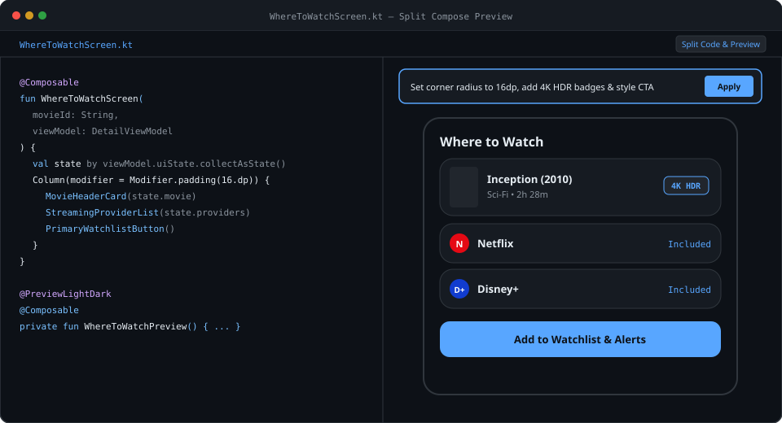
Connect Gemini to the GitHub MCP Server to ground code generation in repository issues, PRDs, and pull requests.
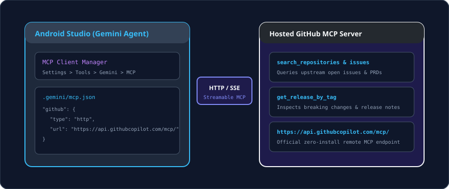
Add the GitHub MCP server to .gemini/mcp.json (or via Settings > Tools > Gemini > MCP Servers):
.gemini/mcp.json
{
"mcpServers": {
"github": {
"command": "npx",
"args": ["-y", "@modelcontextprotocol/server-github"],
"env": {
"GITHUB_PERSONAL_ACCESS_TOKEN": "${GITHUB_TOKEN}"
}
}
}
}
In Gemini Chat, enter:
Using the connected GitHub MCP server, fetch the product requirements and accepted schema from issue #42 ('Watchlist price drop alerts and regional availability notifications'). Ground the implementation in our existing data layer.
Gemini queries get_issue and get_file_contents over MCP to retrieve the exact requirements before scaffolding.
Use Agent Mode to plan, write, and link features across multiple modules autonomously.
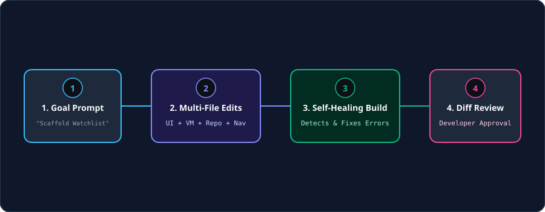
Toggle the Gemini tool window from Chat to Agent Mode and submit:
Build the "Watchlist & Price Drop Alerts" feature in :feature:watchlist.
1. Create WatchlistViewModel.kt exposing WatchlistUiState (Loading, Empty, Success).
2. Create WatchlistRepository.kt with functions to add movies, track rental price drops, and observe saved titles.
3. Build WatchlistScreen.kt with movie cards, price alert toggles, and swipe-to-delete.
4. Add the watchlist route to the root StreamNavGraph.kt in :app.
Follow the rules in AGENTS.md and use Ktor 3.5.2 and StateFlow.
Agent Mode creates WatchlistViewModel.kt, WatchlistRepository.kt, and WatchlistScreen.kt in :feature:watchlist, and registers the route in :app/src/main/kotlin/.../StreamNavGraph.kt.
Review the structured multi-file diff and click Apply All Changes.
Let Agent Mode run Gradle build tasks and fix missing dependencies automatically.
In the Agent window, submit:
Check and compile the project by running a Gradle build for :feature:watchlist. If any dependencies or imports are missing in build.gradle.kts or libs.versions.toml, diagnose and fix them.
Agent Mode:
Executes ./gradlew :feature:watchlist:assembleDebug.
Spots missing test dependencies (runTest, turbine).
Updates feature/watchlist/build.gradle.kts and syncs Gradle.
Re-runs the build until compilation succeeds.
Generate ViewModel unit tests backed by in-memory fakes and Turbine Flow assertions.
Open :feature:watchlist/src/test/kotlin/me/kartikarora/icanhazstream/watchlist/WatchlistViewModelTest.kt.
Right-click in the editor and choose AI > Generate Unit Tests (or prompt in chat):
Generate unit tests for WatchlistViewModel using FakeMovieRepository from :core:testing and app.cash.turbine.test. Include test cases for empty state, adding a movie to watchlist, and price drop notifications.
WatchlistViewModelTest.kt
package me.kartikarora.icanhazstream.watchlist
import app.cash.turbine.test
import kotlinx.coroutines.test.runTest
import me.kartikarora.icanhazstream.model.Movie
import me.kartikarora.icanhazstream.testing.FakeMovieRepository
import org.junit.jupiter.api.Assertions.assertEquals
import org.junit.jupiter.api.Test
class WatchlistViewModelTest {
private val fakeRepository = FakeMovieRepository()
private val viewModel = WatchlistViewModel(repository = fakeRepository)
@Test
fun `when movie is added to watchlist, state updates with saved title`() = runTest {
viewModel.uiState.test {
assertEquals(WatchlistUiState.Empty, awaitItem())
val sampleMovie = Movie(
id = "m1",
title = "Inception",
overview = "Dream within a dream",
releaseYear = 2010,
rating = 8.8,
posterUrl = "https://image.tmdb.org/t/p/w500/inception.jpg"
)
viewModel.addToWatchlist(sampleMovie)
val successState = awaitItem() as WatchlistUiState.Success
assertEquals(1, successState.watchlist.size)
assertEquals("Inception", successState.watchlist.first().title)
}
}
}
Run tests (Ctrl+Shift+R / Cmd+Shift+R) to confirm they pass.
Diagnose and patch exceptions directly from Logcat using Ask Gemini.
Run the app on the emulator, open Explore, tap "Untracked Indie Release #9", and set region filter to "Australia (AU)".
Open Logcat (Cmd+6 / Alt+6).
Find the error:
FATAL EXCEPTION: main
java.lang.NullPointerException: Missing streaming provider list for region 'AU' in MovieDetailViewModel.kt:42
Click Ask Gemini next to the stack trace.
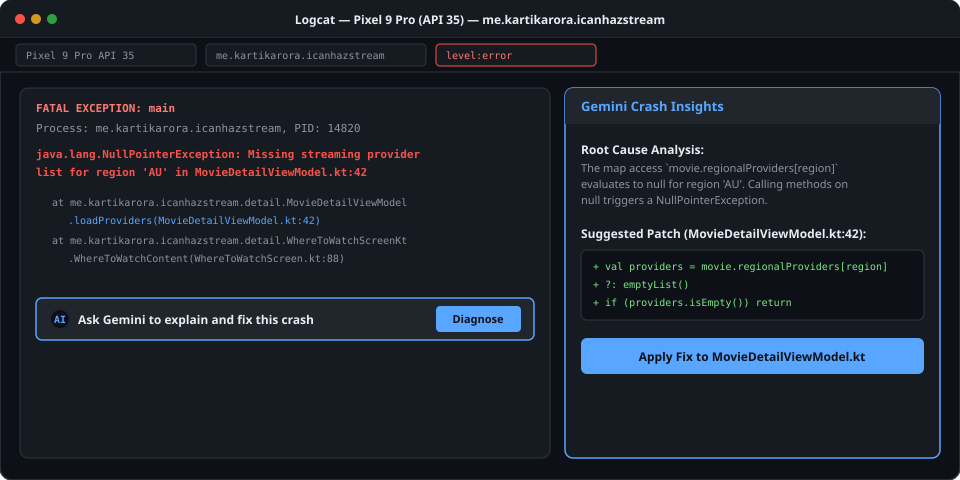
Gemini highlights the unhandled null provider list in MovieDetailViewModel.kt:
val providers = movie.regionalProviders[selectedRegion] ?: emptyList()
if (providers.isEmpty()) {
_uiState.value = MovieDetailUiState.NoProvidersAvailable(selectedRegion)
return
}
Apply the change and re-run to verify the fix.
Describe end-to-end user journeys in plain English and execute them on a live emulator using multimodal vision AI.
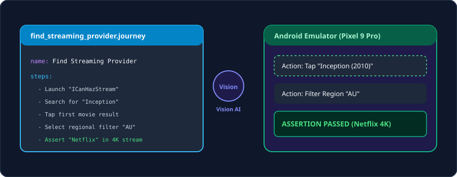
Open journeys/find_streaming_provider.journey:
find_streaming_provider.journey
name: Find Streaming Provider for Inception
targetApp: me.kartikarora.icanhazstream
steps:
- Launch the app "ICanHazStream"
- Tap on the search bar and enter "Inception"
- Tap on the first movie card in the results
- Select regional filter "AU"
- Verify that the screen displays "Netflix" under 4K UHD streaming
Start your Android Emulator.
Open the Journeys tool window.
Select find_streaming_provider.journey and click Run Journey.
Watch Gemini interact with the emulator UI and verify assertions automatically.
Use the Android CLI to inspect symbols, render previews, and run lint checks from scripts and terminal agents.
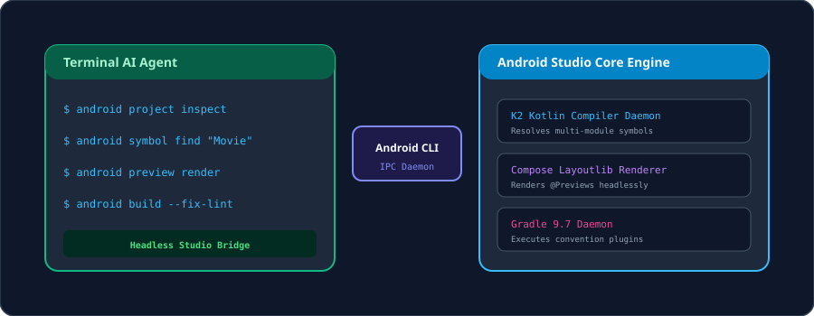
# Inspect project modules and configuration
android project inspect
# Search for symbols across all modules
android symbol find "MovieRepository"
# Render Compose previews headlessly
android preview render --module feature:detail
# Run lint checks and apply automatic fixes
android build --fix-lint
Review production telemetry from Firebase Crashlytics and Google Play Vitals inside Android Studio with one-click Gemini diagnostics.
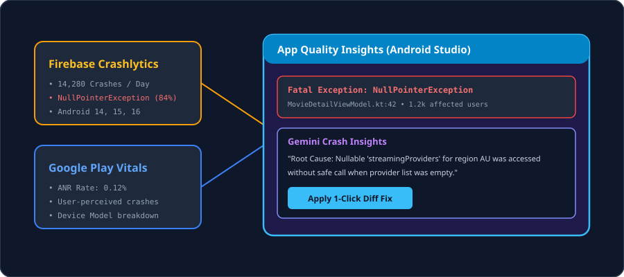
Open AQI: Navigate to View > Tool Windows > App Quality Insights.
Review insights: Click Explain Crash with Gemini on recurring crash clusters.
Apply fix: Apply the suggested patch directly to your Kotlin source file.
Guardrails: Ground code generation with AGENTS.md, .aiexclude, and design token skills.
In-Editor AI: Refactor LiveData to StateFlow with inline prompts (Cmd+\).
Modernisation: Convert legacy Java calculation math and XML layouts to Compose.
Design to Code: Generate UI from wireframes and style interactively in Compose Previews.
Context & Tooling: Connect upstream repository context via GitHub MCP.
Agent Mode: Scaffold multi-module features and self-heal Gradle build issues.
Verification: Test StateFlow with Turbine fakes, debug crashes in Logcat, and automate E2E testing with Studio Journeys and the Android CLI.
On-device AI: Experiment with Gemini Nano via AICore using the ML Kit GenAI Prompt API.
Prompt Library: Store reusable team prompts in .idea/project.prompts.xml.
Questions & Feedback: Reach out at hello@kartikarora.me.